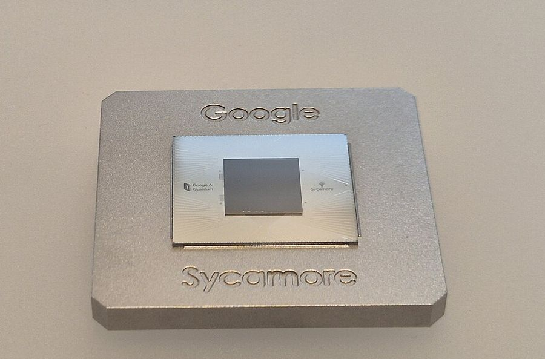
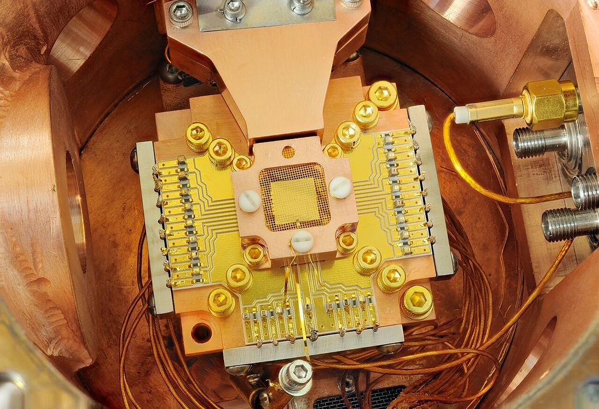

What does a quantum computer look like inside?
Not a glowing chandelier in a lab. A fridge, a lot of wire, and at the bottom a chip the size of a fingernail. Or a chamber of lasers holding a row of single atoms. Pick a machine, rotate it, zoom in, take it apart and keep opening parts until you reach the qubit itself.
You'll be able to point to the main parts of a quantum computer and say what each is for.
W A S D move · Q E down/up · Shift faster · drag or arrows look · wheel speed · B back out · F leave
Shrink down and fly through the machine. Fly into any part marked ▸ to go inside it.
Your browser could not start 3D graphics. The parts list on the right still works: every part, what it does and how cold it is.
The real thing
Everything above is drawn. These are photographs of the real hardware, to check the drawing against.





.jpg){kind=link}
How small is this?
Every bar below is one object, drawn at its real size compared with the width of the view. Drag the slider to zoom the whole ladder at once. At 1 cm across the chip fills the view; keep going and the qubit’s pads fill it; keep going and the junction does. Click a name to zoom to it, or a Level tag to open it in the model above.
Sizes are representative: a hair, a virus and a chip all vary, so the range is written beside each one. The fridge is roughly three billion times the width of an aluminium atom, and the oxide barrier in the junction is roughly four to eight of those atoms thick.
How to use it
- Pick a machine: the three buttons at the top of the panel switch between a superconducting computer (IBM, Google), a trapped-ion computer (Quantinuum, IonQ) and a neutral-atom computer (QuEra, Atom Computing, Pasqal). Each opens down to a single qubit, in four to six levels.
- Turn it: drag. Zoom with the pinch gesture, the + and − buttons, or the scroll wheel once you have clicked the scene. Shift-drag or right-drag pans.
- Look at a part: hover for its name, click for what it is and how cold it runs. The list on the right does the same and works without a mouse.
- Take it apart: the slider pulls the parts of the current level away from each other. See-through fades everything but the selected part. Isolate hides the rest.
- Go inside: parts marked opens have an inside. Click Open inside, or double-click the part, and you drop one level. Each level is smaller than the last by anything from two times to several thousand. The row along the top jumps between levels.
- Shrink and fly: press Shrink & fly (or F) and the camera becomes you. W A S D move, Q and E go down and up, Shift is faster, and the wheel is the throttle. Drag (or the arrow keys) to look, or press Mouse look to capture the mouse. On a phone there is a stick, up and down buttons, a two-finger pinch to fly forward, and Tilt to look. Fly into any part marked ▸ and you shrink into it, to the next level down; fly back out of the scene, or press B, to grow again. Click any part for its card: See it alone shows just that part, Back to the whole structure puts everything back, and Full explanation gives what it is, why it is needed, how it works, what it is made of and its sources. You can fly through walls: nothing here collides.
- Watch it work: in the cryostat, teal dots are control pulses on their way down and amber dots are readout replies on their way up. In the ion and atom views, look for the chain rocking, the tweezer that carries an atom into a gap, and an ion’s random bright-or-dark readout.
What this model is, and is not
It is a teaching model of three kinds of quantum computer: superconducting (IBM, Google), trapped-ion (Quantinuum, IonQ) and neutral-atom (QuEra, Atom Computing, Pasqal), drawn from published descriptions of how those machines are put together. It is not a CAD file of any company’s machine: nobody publishes one. Proportions are simplified, and the scale is bent wherever it has to be to show anything. The chip shows a small excerpt of the qubits a real one carries. In the junction view the oxide barrier is drawn about ten times too thick. In the ion and atom views the ions, the atoms and the gaps between them are drawn far too big to be seen at that scale, and the Rydberg orbit is drawn about 300 times too small next to the atom it belongs to. Temperatures and sizes are the typical values from the papers below, and they differ between labs and machines.
Photonic quantum computers are not modelled. How the companies compare covers all four approaches side by side.
Where the numbers come from
Superconducting
- Krinner et al., Engineering cryogenic setups for 100-qubit scale superconducting circuit systems, EPJ Quantum Technology 6, 2 (2019). doi:10.1140/epjqt/s40507-019-0072-0. Stages, wiring, attenuation, amplifier chain.
- Krantz et al., A quantum engineer’s guide to superconducting qubits, Applied Physics Reviews 6, 021318 (2019). doi:10.1063/1.5089550. Transmons, resonators, junctions, readout.
- Kjaergaard et al., Superconducting qubits: current state of play, Annual Review of Condensed Matter Physics 11 (2020). doi:10.1146/annurev-conmatphys-031119-050605. Fabrication and the state of the art.
- Arute et al., Quantum supremacy using a programmable superconducting processor, Nature 574, 505 (2019). doi:10.1038/s41586-019-1666-5. Google’s square-grid layout with tunable couplers.
- Google Quantum AI, Quantum error correction below the surface code threshold, Nature (2025). doi:10.1038/s41586-024-08449-y. The Willow chip.
- Chamberland et al., Topological and subsystem codes on low-degree graphs with flag qubits, Physical Review X 10, 011022 (2020). doi:10.1103/PhysRevX.10.011022. The heavy-hex lattice IBM uses.
Trapped ions
- Bruzewicz et al., Trapped-ion quantum computing: progress and challenges, Applied Physics Reviews 6, 021314 (2019). doi:10.1063/1.5088164. The apparatus, the lasers, the traps.
- Pino et al., Demonstration of the trapped-ion quantum CCD computer architecture, Nature 592, 209 (2021). doi:10.1038/s41586-021-03318-4. Segmented traps that shuttle ions.
- Cirac and Zoller, Quantum computations with cold trapped ions, Physical Review Letters 74, 4091 (1995). doi:10.1103/PhysRevLett.74.4091. Gates through the shared motion.
- Sørensen and Mølmer, Quantum computation with ions in thermal motion, Physical Review Letters 82, 1971 (1999). doi:10.1103/PhysRevLett.82.1971. The gate most machines use.
- Ballance et al., High-fidelity quantum logic gates using trapped-ion hyperfine qubits, Physical Review Letters 117, 060504 (2016). doi:10.1103/PhysRevLett.117.060504, and Gaebler et al., Physical Review Letters 117, 060505 (2016), doi:10.1103/PhysRevLett.117.060505. Two-qubit gate fidelities above 99.9%.
Neutral atoms
- Saffman, Walker and Mølmer, Quantum information with Rydberg atoms, Reviews of Modern Physics 82, 2313 (2010). doi:10.1103/RevModPhys.82.2313. Rydberg states, the blockade, gates.
- Jaksch et al., Fast quantum gates for neutral atoms, Physical Review Letters 85, 2208 (2000), doi:10.1103/PhysRevLett.85.2208, and Lukin et al., Physical Review Letters 87, 037901 (2001), doi:10.1103/PhysRevLett.87.037901. Gates built on the blockade.
- Evered et al., High-fidelity parallel entangling gates on a neutral-atom quantum computer, Nature 622, 268 (2023). doi:10.1038/s41586-023-06481-y. Global pulses acting on many pairs.
- Bluvstein et al., A quantum processor based on coherent transport of entangled atom arrays, Nature 604, 451 (2022). doi:10.1038/s41586-022-04592-6, and Logical quantum processor based on reconfigurable atom arrays, Nature 626, 58 (2024), doi:10.1038/s41586-023-06927-3. Moving tweezers, arrays of hundreds of atoms.
- Manetsch et al., A tweezer array with 6,100 highly coherent atomic qubits, Nature 647, 60 (2025). doi:10.1038/s41586-025-09641-4. The largest array so far.
The 3D library is three.js (MIT licence), served from this site, pinned and hashed like the other vendored code.